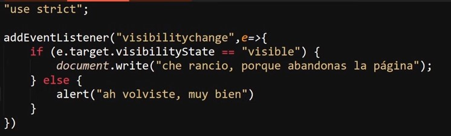

Visibility Change
Se trata de una API especializada en detectar si la pestaña de la página se encuentra visible en ese momento o no. En otras palabras, permite detectar si el usuario actualmente se encuentra visualizando la pestaña de la página o si, por otro lado, se encuentra visualizando otra pestaña diferente.
Su funcionamiento es muy simple: se basa en el evento "visibilitychange", el cual se dispara cada vez que el usuario cambia de pestaña en el navegador. Esta API posee dos valores posibles, los cuales son:
-
Hidden: el cual se aplica mientras la pestaña actual de la página no esté enfocada en pantalla, sino en su lugar lo esté otra pestaña.
-
Visible: Este valor se aplica mientras la pestaña de la página se encuentre seleccionada como la pestaña actual del navegador.
De ese modo, para aplicar la API se requiere de la inicialización del evento "visibilitychange"; luego, a la función que ejecutará el escucha de eventos se le asigna un parámetro (e). Por último, se accede a la propiedad ".visibilityState"; esto se puede lograr de dos formas, ya sea definiendo como "e.target.visibilityState" o como "document.visibilityState" (ambos casos tienen el mismo efecto).
Ejemplo

En este ejemplo se puede observar cómo se inicializa el escucha de eventos con "visibilitychange", se le pasa el parámetro "e" a la función flecha y esta, según cuál sea el valor de la propiedad "visibilityState", mostrará un mensaje u otro. De ese modo, cuando el usuario abandone la pestaña saltará un mensaje, y luego saltará una alerta cuando este retorne.
De esta manera se puede realizar una acción en caso de que el usuario abandone o ingrese a la pestaña de la página de forma dinámica.